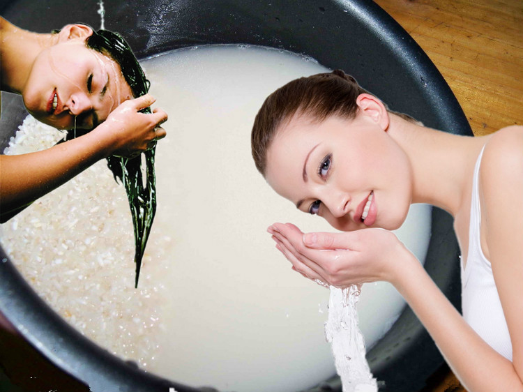

头发干枯没有营养，试试用天然的米水洗头， 效果佳，而且这是沌天然的。头发洗后，平 时生活注意一点，发质就不会反弹。

经过我的实战经验，答案是：可以洗干净的。只是用惯了洗发水，感觉没有那个强去污。 其实就是自己的心理作用了。我第一次洗完头发就让老公给我仔细检查，看洗干净没有， 还让他闻一下，因为我怕醋的酸味还留在头发上，但实际情况是，我的担心都是多余的： 头发很干净也没有异味。
我想这个原理可能和洗木耳的时候可以放一点淀粉里就很容易把木耳里面的小沙砾和脏东 西洗出来的原理差不多，淘米水里也有淀粉，这样就有了一定的粘性，可以把脏东西粘住。 而且它也很营养。我想它的营养比那些什么精华什么什么的更实在也更有效。
这个要看你自己愿意了。我一般就是和以前洗头时间差不多（大概10-15分钟吧），把头发 浸湿以后用指腹轻轻按摩头皮，中途可以用杯子或者碗等盛水的器皿舀一些淘米水淋在头发上， 再继续按摩。
洗完以后一定要用清水清干净，因为这样，淘米水才能把脏东西从你的头发上带下来。不然 的话头发上的脏东西还在不说，还头股酸味。所以，冲水也很重要。
我家也是两口人，每次煮的米饭也不多，所以我淘米的时候水放得少一点，这样淘米水就比较浓。 但是用来洗长头发是远远不够的，所以我通常都是把2、3次的淘米水储在一起，这样量就足够了。